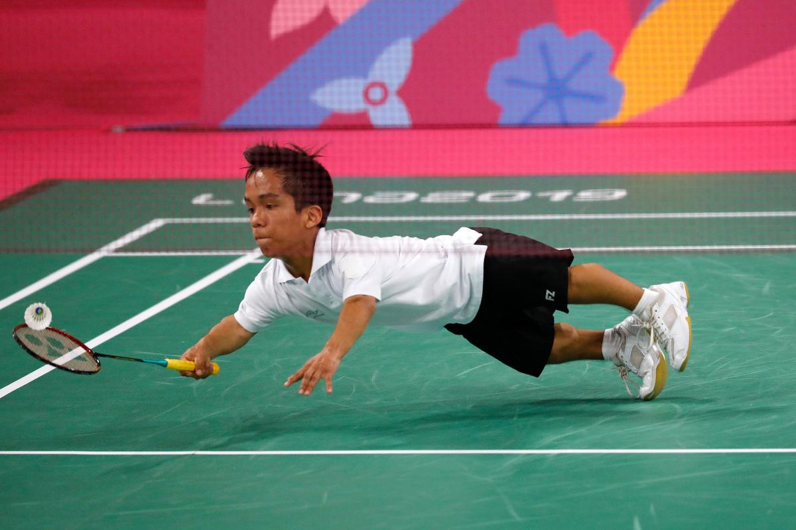
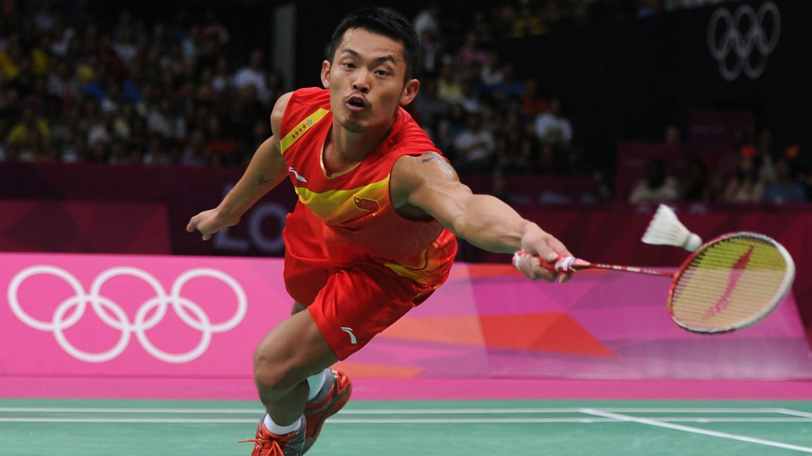

Badminton Sport
What is Badminton Sport?
Badminton is a fast-paced racket sport played by either two opposing players (singles) or two opposing pairs (doubles).
The game is played on a rectangular court divided by a net.
Players use rackets to hit a shuttlecock (a feathered or plastic projectile) back and forth over the net.
The objective is to score points by landing the shuttlecock in the opponent's half of the court.
The game of badminton, as we know it today, was introduced by the Duke of Beaufort in 1873 at his country estate,
Badminton House, in Gloucestershire, England. The sport's roots can be traced back to ancient games like battledore and shuttlecock,
which were played in Greece, China, and India. British army officers stationed in India during the 1860s adapted the game of "Poona" by adding a net,
and upon returning to England, they introduced it at the Duke's estate.


|